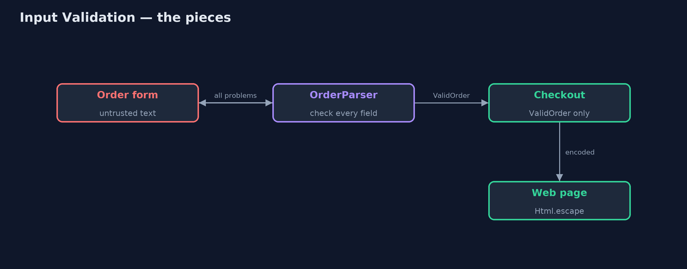
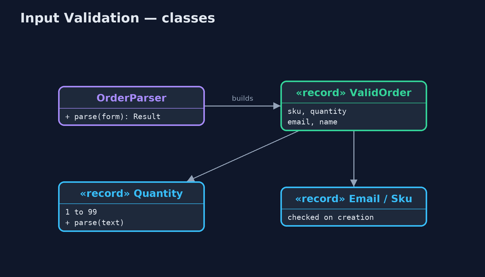
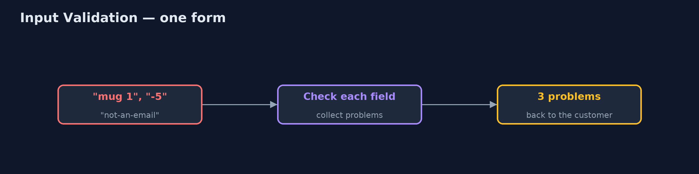
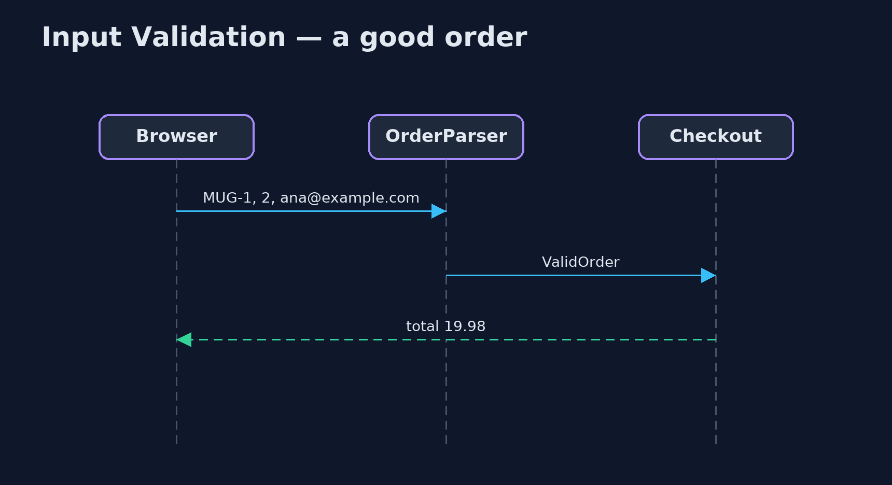

Input Validation Pattern
src/main/java/com/jk/explore/inputvalidation/
├── CustomerName.java A customer's name: letters from any alphabet, with spaces, apostrophes and hyphens
├── Email.java An email address: something, an at sign, a domain with a dot, and not absurdly long
├── Html.java Output encoding: make text safe to put inside a web page, whatever it contains
├── InputValidationDemo.java The five acts: trusting the form, checking at the boundary, parsing into safe types, encoding on the way out, and the bill
├── NaiveCheckout.java Before: the form's text is used as it arrives
├── OrderForm.java What arrives from the browser: every field is just text, and none of it can be trusted
├── OrderParser.java The pattern at the boundary: turn untrusted text into checked values, collecting every problem so the customer can fix them all at once
├── Quantity.java How many of a product: a whole number from 1 to 99
├── Sku.java A product code
└── ValidOrder.java An order made only of checked valuesCheck everything that comes from outside at the boundary, turn it into types that cannot hold bad values, report every problem at once, and still encode text on its way out.
Input Validation is the first rule of secure code: nothing that arrives from outside can be trusted. A browser form, a request to an API, a file upload: every field is just text, and it may be empty, too long, the wrong kind, or written by an attacker. Input validation checks each field at the boundary, against rules for what is allowed, before the rest of the program uses it.
This project also shows the stronger form, sometimes called "parse, don't validate": turn text into small types such as Quantity and Email that check themselves when they are made. Once a Quantity exists, it is valid, and no other code needs to check it again. And it shows the partner rule: text that is valid can still be dangerous somewhere else, so encode it on the way out.
The idea in everyday terms
Think of the post room of a large office. Every parcel is checked once, at the door: the right size, a real address, nothing leaking. Parcels that pass get a sticker, and nobody upstairs checks them again. But the sticker only means "fit for the office". Anything sent back out still has to be packed for its own journey.
The scenario
The online store's checkout used the form's text as it arrived. A quantity of minus five mugs gave a total of minus 49.95, so the shop would have paid the customer. "not-an-email" was saved as an email address. And product reviews were shown exactly as typed, so a review containing a script tag would run in other shoppers' browsers.
Run
./gradlew runThe demo tells the story in 5 acts, each printing exact numbers that the tests check:
| Act | What it shows |
|---|---|
| 1. Trusting the form | A quantity of "-5" mugs at 9.99 gives a total of -49.95, and "not-an-email" is saved as the email address. |
| 2. Check at the boundary | Each field is checked where it arrives: 3 problems reported together; a good form is accepted with a total of 19.98. |
| 3. Types that cannot be wrong | new Quantity(-5) is refused with "quantity must be from 1 to 99"; checkout takes a ValidOrder and never checks again. |
| 4. Encode on the way out | A review containing a script tag, shown as typed, would run; HTML-encoded, it is shown as harmless text. |
| 5. The bill | The rule [A-Za-z ] rejects "Siobhán O'Brien"; a rule for letters in any alphabet accepts it; and browser checks can be skipped. |
Test
./gradlew test5 tests in DemoRunsTest, OrderParserTest. Every number the demo prints is asserted, and nothing depends on the clock, so every run gives the same result.
Technologies and versions
| Technology | Version | Used for |
|---|---|---|
| Java | 21 | the code (toolchain set in build.gradle) |
| Gradle | 9.2.1 (wrapper) | build and run, nothing to install |
| JUnit | 5.10.2 | the tests |
| videokit | repository tool | the narrated video and animation: Piper en_US-amy-medium, speed 0.8, longer pauses (the approved amy-slow voice) |
Learning Material
| Document | What it is for |
|---|---|
| Problem statement | the situation and what the project must show |
| Prerequisites | what you need to know first |
| Input Validation, explained | the acts in prose |
| Session guide | a one-hour lesson with exercises |
| Animated walkthrough | the acts step by step, narrated |
| Spec | what this project must be true of |
The pattern in one picture
Checked at the door, encoded on the way out.

Where each piece sits
Types that check themselves.

How the data moves
Text in, checked values or problems out.

Who calls whom, in order
Parsed once, trusted afterwards.

Video
video/input-validation-pattern-explained.mp4 (with .m4a audio and .srt subtitles) is built by video/build_video.sh. Rendered media is not committed.
What it costs
- Rules can be unfair. A rule of plain A to Z letters turned away a real customer called Siobhán O'Brien; allow letters from any alphabet, apostrophes and hyphens.
- The server must check. Checks in the browser are only a convenience; a request sent straight to the server skips them.
- Validation is not enough on its own. Valid text must still be encoded for web pages, and passed as parameters to databases.
When this is too much
There is no "too much" for the principle: all outside input must be checked. What can be overdone is strictness: reject what is truly invalid, not what is merely unusual.
Where you have already met this
- Jakarta Bean Validation annotations such as
@Min,@Emailand@Pattern, and Spring's@Valid. - Value objects in Domain-Driven Design that check themselves when created.
- The OWASP Input Validation and Cross-Site Scripting cheat sheets.
Where this sits
This project is in security-design-patterns, next to Secure Gateway, which rejects badly shaped requests before they reach a service; this one checks every field inside it.